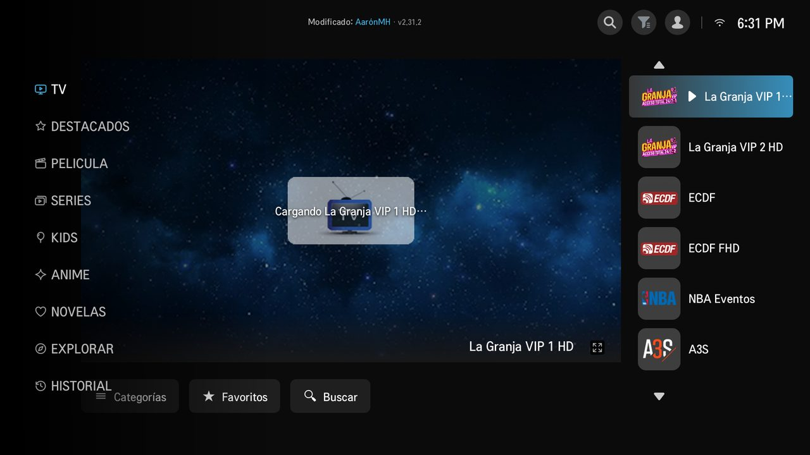
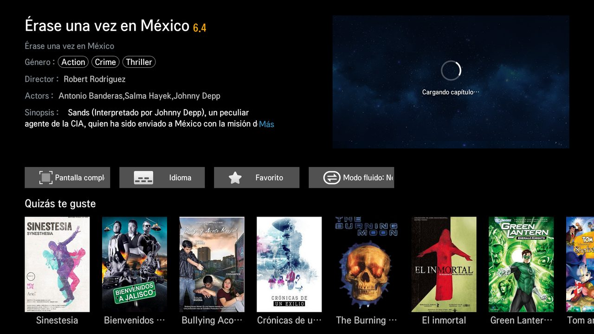
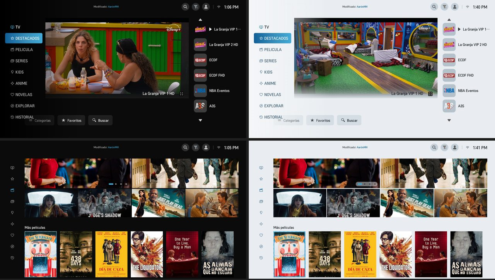
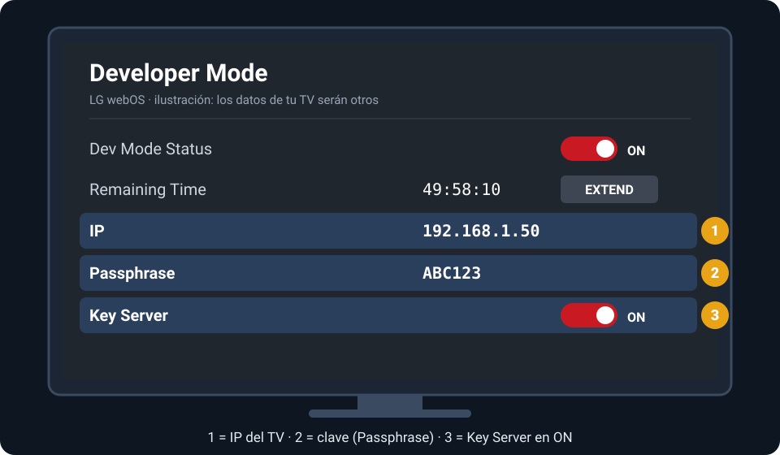
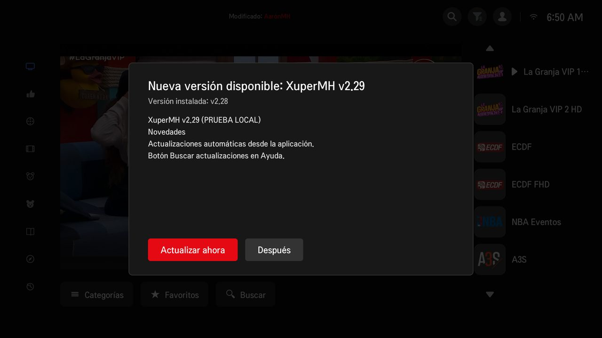

Qué trae
Pensada para que funcione bien también en los LG más viejos.
Todo en un lugar
TV en vivo, películas, series, kids, anime y novelas, con favoritos e historial.
Sin congelarse
Varios servidores de respaldo. Si uno falla, cambia solo en segundos.
Modo fluido
Para TV antiguos que no reproducen ciertos videos.
Se actualiza sola
Avisa cuando hay versión nueva. Las descargas van firmadas: solo acepta archivos originales.
Tema oscuro y claro
Elige cómo se ve desde Configuración → Apariencia.
Diagnóstico
Revisa la conexión, el TV y el reproductor para saber qué falla.
Así se ve
Capturas reales de la app.



Cómo instalar
Se hace una sola vez, en unos 15 minutos. Después XuperMH se actualiza sola desde el TV.
Lo que necesitas
- Un TV LG con webOS conectado a internet.
- Un celular Android o una PC con Windows 10/11, en el mismo Wi-Fi que el TV.
- Una cuenta LG (gratis; se crea desde el TV).
Paso 1 · Activa el Modo Desarrollador en el TV
- En el TV abre LG Content Store.
- Busca Developer Mode, instálala y ábrela.
- Inicia sesión con tu cuenta LG (o créala ahí mismo).
- Activa Dev Mode Status. El TV se reinicia.
- Abre otra vez Developer Mode y deja Key Server en ON.
- Anota la IP y la Passphrase (6 caracteres; mayúsculas y minúsculas cuentan).

Paso 2 · Instala XuperMH
- Instala Termux desde F-Droid o GitHub. La de Play Store puede fallar.
- Abre Termux y pega este comando (descarga el instalador):
curl -LO https://raw.githubusercontent.com/xuperaaronmh/xupermh/main/instalar-termux.sh - Pega este otro para ejecutarlo:
bash instalar-termux.sh - Escribe la IP y la Passphrase del TV. El instalador descarga la última versión, comprueba que es el archivo original, la instala y la abre en el TV. Si Termux pregunta algo la primera vez, contesta Y.
[4/6] Descargando XuperMH ✓ XuperMH descargada y firma comprobada [5/6] Subiendo al televisor ✓ Copiado al TV [6/6] Instalando en el televisor ✓ XuperMH instalada ¡Listo! XuperMH se está abriendo en el TV.
- Descarga los dos archivos:
- Clic derecho sobre el ZIP → Extraer todo…. No lo abras desde dentro del ZIP.
- Mueve el archivo .ipk a la misma carpeta que extrajiste.
- Doble clic en INSTALAR-XUPERMH.bat y escribe la IP y la Passphrase del TV.
XuperMH Instalador para Android En preparación
Una app con un solo botón: escribes la clave del TV y listo. Cuando esté lista aparecerá aquí. Mientras tanto usa el camino del celular con Termux.
Paso 3 · Mantén el Modo Desarrollador
Cuando salga una versión nueva, el TV muestra un aviso. Pulsa Actualizar ahora y luego apaga y enciende el TV.

Si algo falla
Los mensajes más comunes del instalador y qué hacer.
| Mensaje | Qué hacer |
|---|---|
| "El TV no responde en el puerto 9922" | El TV debe estar encendido y en el mismo Wi-Fi. La IP tiene que ser la de Developer Mode, con Dev Mode Status en ON. |
| "El TV no comparte su llave" | En Developer Mode activa Key Server. |
| "La clave no es correcta" | Escríbela igual que en el TV. Si sigue, cierra y abre Developer Mode. |
| "La FIRMA NO COINCIDE" | El archivo no es el original. No lo instales; descárgalo otra vez desde esta página. |
| "El TV tiene una versión más nueva" | Desinstala XuperMH del TV y vuelve a instalar. |
| La app se borró sola | Se venció el Modo Desarrollador. Repite el Paso 2 y pulsa EXTEND de vez en cuando. |
| Video negro o "Conectando…" | En la película, activa Modo fluido. Si sigue, manda una foto del Diagnóstico. |
Preguntas frecuentes
¿Qué TVs son compatibles?
TV LG con webOS que tengan la app Developer Mode de LG. Está probada en webOS 1 a 6. Los TV más viejos pueden necesitar el Modo fluido para algunos videos.
¿Tengo que instalarla otra vez en cada versión?
No. Solo la primera vez. Después la app avisa y se actualiza desde el TV.
¿Es seguro?
Cada versión va firmada digitalmente. El TV y los instaladores comprueban la firma antes de instalar y rechazan cualquier archivo alterado. La clave de tu TV no se guarda en ningún lado.
¿Puedo instalarla desde un iPhone?
No. Usa un celular Android o una PC con Windows.
Reportar un problema
- Toma una foto de la pantalla de inicio: ahí sale la versión.
- Abre Configuración → Diagnóstico, pulsa Analizar de nuevo y toma otra foto.
- Mándalas a xuperaaronmh@gmail.com con el modelo de tu TV y qué pasó.